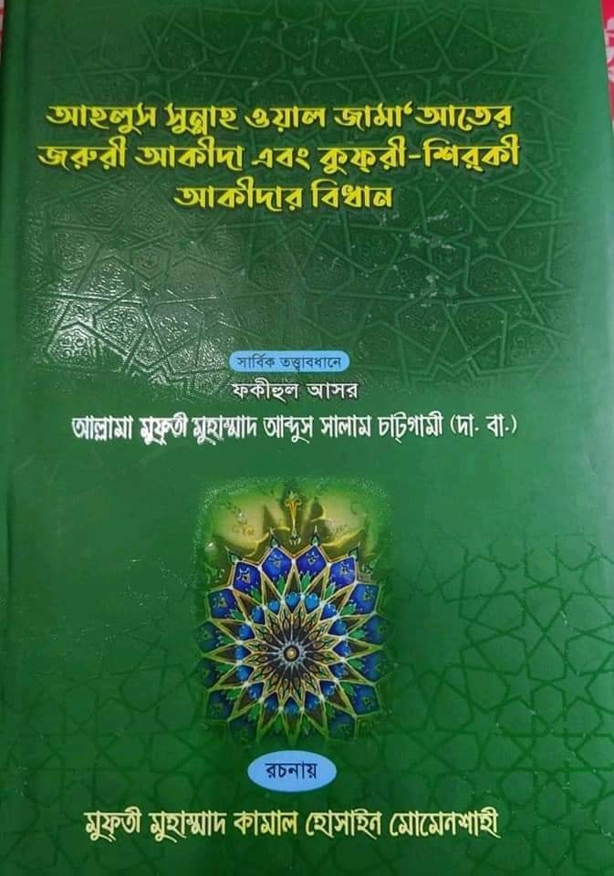
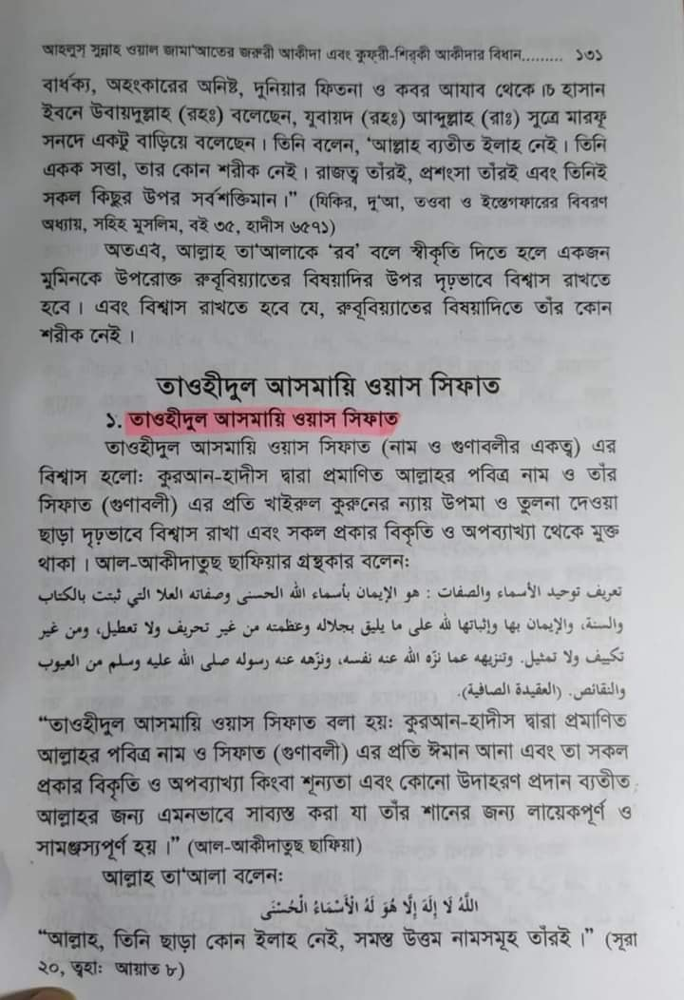
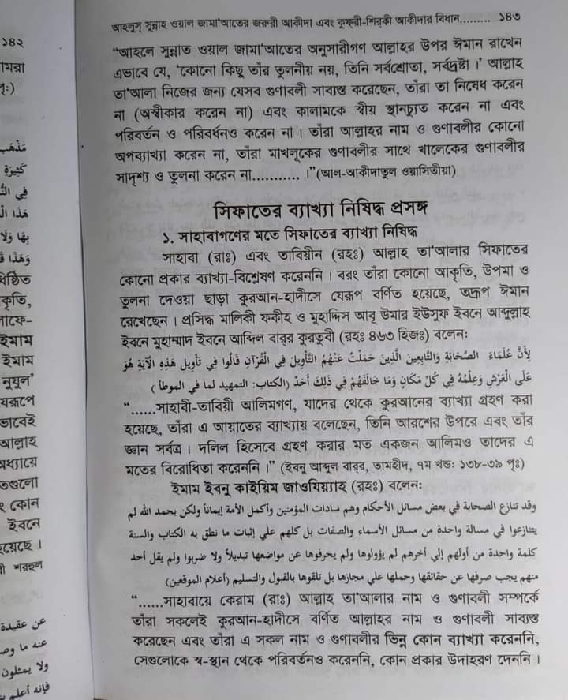
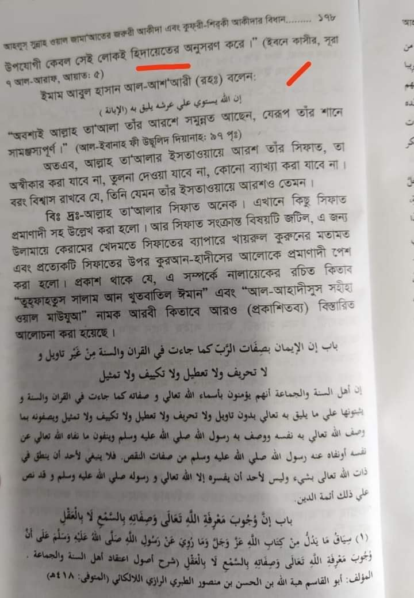

মুফতি আব্দুস সালাম চাটগাঁমী'র রাহ. তত্ত্বাবধানে রচিত এ কিতাবে আল-আসমা ওয়াস-সিফাতের…
২৬ সেপ্টেম্বর, ২০২১
মুফতি আব্দুস সালাম চাটগাঁমী'র রাহ. তত্ত্বাবধানে রচিত এ কিতাবে আল-আসমা ওয়াস-সিফাতের অধ্যায়ের ব্যাপারে লেখক মুফতি মোহাম্মদ কামাল হোসাইনকে জিজ্ঞাসাবাদ করেছেন চট্রগ্রামের প্রিয় ছোট ভাই محمد عطاءالله الأنصاري
তখন মুফতি কামাল সাহেব বলেছেন,
❝এগুলো হুজুরকে দেখানো হয়েছে। হুজুর নজরে সানি করে সহমত ছিলেন। কোনো দ্বিমত করেন নি। দ্বিমত করলে আমি অবশ্যই পরিবর্তন করতাম❞
কোনোভাবে যেহেতু রদ্দ করা যাচ্ছে না। তবে তো চাটগাঁমীকে দেহবাদী ট্যাগ না দিয়ে উপায় নেই! কী বলেন মাতুরিদি ভাইয়েরা!



